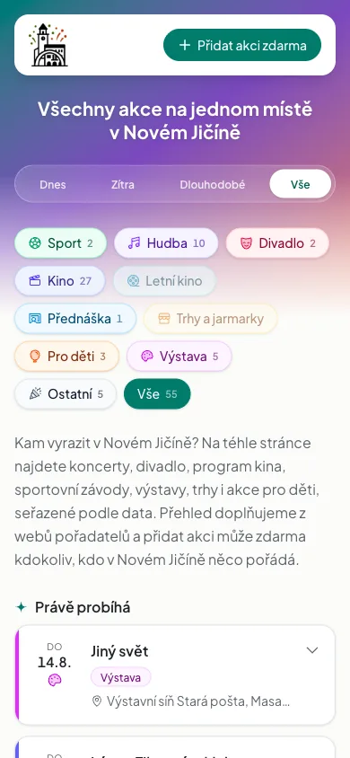

akcenj.cz, všechny akce v Novém Jičíně na jednom místě
Vlastní projekt. Nikdo si ho neobjednal.
Podívejte se na živý webProblém
Informace o akcích byly roztroušené po Facebooku, plakátech a deseti webech pořadatelů.
Kdo není na sociálních sítích, měl smůlu. O koncertu se dozvěděl až z fotek druhý den.
Řešení
Postavil jsem vyhledávač, kde jsou všechny akce pohromadě, seřazené podle data. Filtrovat jde na dnes, zítra, dlouhodobé nebo celý měsíc dopředu.
Kategorie: sport, hudba, divadlo, kino, přednášky, akce pro děti, výstavy a trhy.
Pořadatelé si akce přidávají a upravují sami, zdarma. Každý záznam schvaluji ručně, aby se tam neobjevily podvodné události.


Výsledek
- Za první týden provozu 46 akcí
- Napsal o tom Novojičínský deník (7. 8. 2026)
- Návštěvnické centrum Nový Jičín projekt označilo za užitečný doplněk stávající propagace
Co jsem na tom dělal
Návrh, design, frontend i backend, administraci pro pořadatele, schvalovací proces a nasazení. Všechno sám.
Chcete něco podobného? Napište mi.
Chci nezávaznou nabídku